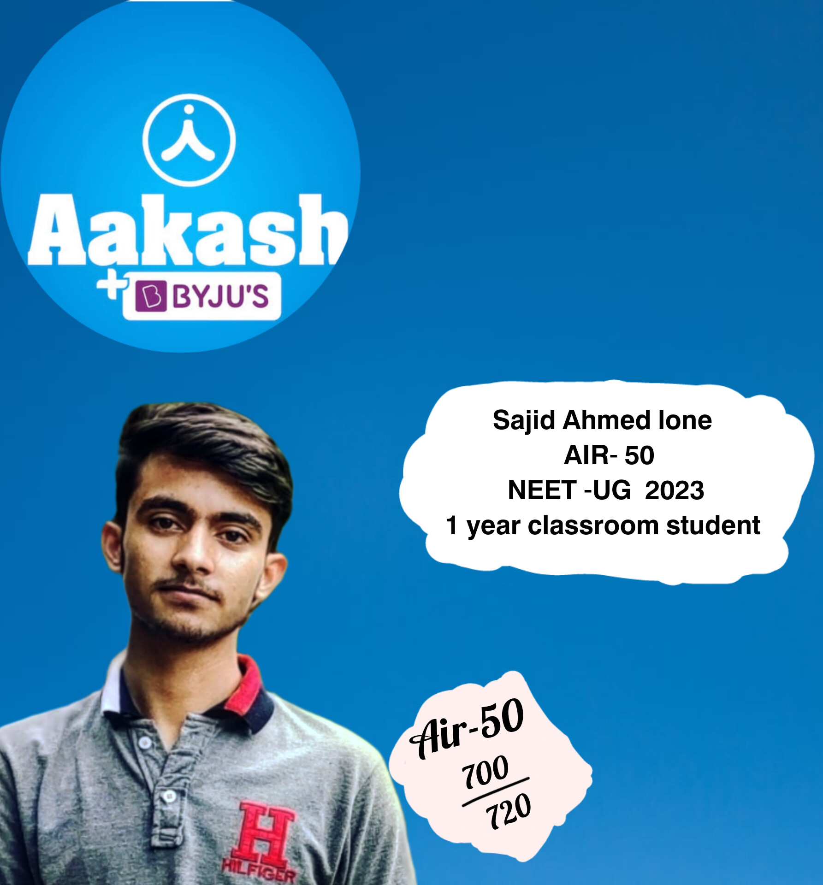

Online Instant Admission Cum Scholarship Test
FREE REGISTRATION
According to the NTA list, Sajid from J&K has secured the All India Rank,
AIR 50 and topped the NEET 2023 Result. Sajid secured 700 out of 720. The
NEET-UG 2023 topper list will talk about the NEET UG Result 2023 and include
the names of all those candidates who have scored Score 50h percentile in
the NEET-UG exam. Sajid Ahmed Lone, J&K, kishtwar(182204), received the highest
scores in the NEET 2023 exam (700 out of 720). Sajid NEET topper from J&K Score AIR 50,

Sajid Ahmed Lone, a resident of kishtwar (padyarna), has topped the National Eligibility
cum Entrance Test (NEET) UG-2023 examination in Jammu and Kashmir and Score 50 rank at the
all-India level.Sajid Ahmed Lone, a resident of kishtwar (padyarna), has topped the National
Eligibility cum Entrance Test (NEET) UG-2023 examination in Jammu and Kashmir and Score 50
rank at the all-India level. Sajid Ahmed Lone has topped the NEET UG-2023 exam in Jammu and Kashmir
and Score 50 rank at the all-India level. Sajid Lone, hailing from Padyarna kishtwar, s Score
700 marks out of 720 in open category accounting for a percentile score of 95.6 SajidLone said that
appearing in Score 50ualifiers was a surprise for him. “I had gone to a coaching centre in 2021 thinking
that I would score enough to get a seat in any government medical college but due to the support of my
teachers, my confidence amplified gradually and finally I was able to achieve verygood,” he said.He had
done his Class 11 and from Government Model Boys Higher Secondary School, kishtwar and 12th from SRML Jammu
The young lad, son of Khursheed Ahmed Lone and mother Shahzada Begum, He had to battle internet shutdowns
during Covid-19 pandemic right from his Class 11 in kishtwar.
Every student faces difficulties. But in our time, a major difficulty was shifting from offline to online.
The problem was 2G internet in Class 11 coupled with internet shutdowns,” he said As many as 20,005 aspirants
of J&K have qualified the test out of 36,374 who appeared from the union territory. Sajid Lone urged the young
aspirants to be consistent. “To become extraordinary, you don’t have to do anything extra, except doing ordinary
things which have to be repeated over time,” he said. Sajid Lone’s achievement has been hailed by many in the
union territory. Lieutenant governor Manoj Sinha’s office congratulated him on his success. “Congratulations to
Sajid Ahmed Lone from Shopian for securing the All-India 50 Rank in NEET UG- 2022 Result. Proud of your
achievements. My best wishes to all the candidates from Jammu & Kashmir, who have qualified in the NEET exam,”
Sinha’s office said in a tweet.
© Copyright
Akash Byjus. All Rights Reserved
Designed by
Nasir Malik